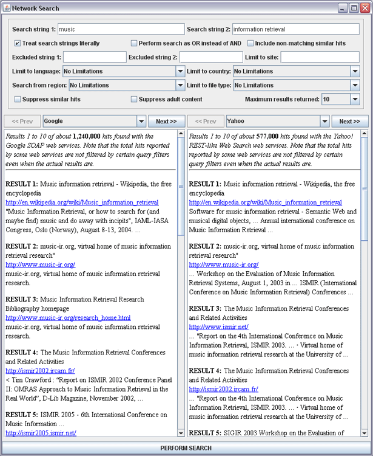

| Network Search Dialog Box |
The Network Search non-modal dialog box can be opened by choosing the
Perform Test Search command from the Search Menu. This dialog
box is intended primarily for testing and debugging, and is not a central part
of jWebMiner's functionality.
This dialog box allows users to perform probe searches using various search configurations in order to view the actual pages returned by queries submitted to web services as well as the corresponding hit counts. Two different web services can be searched simultaneously, with the results displayed side by side, as shown below in Figure 1.
This dialog box can be useful in understanding the hit counts that result from particular queries when experimenting with the best search parameterization for a particular task or when debugging while extending the software's functionality.

Figure 1: A screenshot of the Network Search Dialog Box showing the results of a sample search using both Google and Yahoo!.
This dialog box is automatically set to contain the same settings that have been chosen in the jWebMiner GUI when it is opened from the Search Menu. However, these settings can be changed from within the dialog box without affecting the jWebMiner settings themselves.
The Network Search dialog box contains all of the search parameterizations as jWebMiner except for required filter strings. Also, it only allows up to one excluded filter strings, unlike jWebMiner, which allows an unlimited number.
The top section of this dialog box allows the user to choose the parameters of the search to be performed. This provides an interface that is independent of the particular search service being used for any given search. The parameters are as follows:
- The Search string 1 and Search string 2 fields allow the user to specify the strings to search for. These fields may each contain multiple words separated by spaces if desired. No special query formatting specific to a particular search service should be applied to these strings, as this interface is intended to be service-independent, and this dialog auto-formats each request in a way that is specific to each service.
- The Treat strings literally checkbox controls whether all search queries should be literal searches (e.g. for the query "heavy metal", hits must have the two words adjacent if the search is literal). This is also sometimes known as an exact search or a phrase search.
- The Perform search as OR instead of AND checkbox controls whether search queries in Search string 1 and Search string 2 fields need only contain one of the specified query words in order to result in a hit. This OR applies to both the individual words in each of the fields as
well as the combination of the fields. If this is true, then only one of the query words must be present. If this is false, then all of them must be present (although not necessarily in the specified order, unless the Treat strings literally checkbox is selected).
- The Include non-matching similar hits checkbox controls whether results returned by search queries may include hits that do not contain one or more of the specified search string(s) but do contain terms very similar to them (e.g. alternative spellings).
- The Excluded string 1 and Excluded string 2 text fields set strings to exclude in all search queries. Hits may not contain these filter strings. These excluded strings are treated as literal (i.e. must appear in the same order).
- The Limit to site text field sets a network site that will be exclusively searched in search queries. Leaving this blank means that all available network sites will be searched.
- The Limit to language combo box sets the name of a language that hits must be in in order to be included in search results.
- The Limit to country combo box sets the name of a country that sites must be in in order to be included in search results.
- The Search from region combo box sets the name of a country where the search will be performed (i.e. where the search service is located). Results are not limited to this country, however.
- The Limit to file type combo box sets the name of a file extension that a document must have in order to be returned as a hit in search results.
- The Suppress similar hits checkbox controls whether to suppress similar hits when reporting results. Similar in this context means either sites with identical titles and/or descriptions, or multiple hits from the same host.
- The Suppress adult content checkbox controls whether to suppress hits that are classified as containing adult content by the search service in question.
- The Maximum results returned combo box sets the maximum number of result details returned by each search query.
The middle section of this dialog box displays search results. Each search can be performed using up to two search services, and the results are listed side by side. Above each results field is a combo box allowing the user to choose which search service to utilize (if any) for the appropriate results area, as well as Prev and Next buttons for navigating large sets of results. The number of results moved when a Prev or Next button is pressed is set by the Maximum results returned combo box. Results also include the total number of hits found, any relevant limitations of the particular search service used and information on the actual query sent to the web service that generated the result.
Searches can be initiated by pressing the PERFORM SEARCH button or by pressing Enter while the cursor is in one of the text fields. A progress bar will note progress as the search is performed.
-top of page-